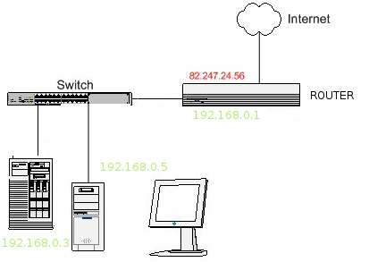

5.3. Direcciones IP públicas y privadas
|  |
| Fuente propia a partir de la imagen de Antoine en JURA-NUX con licencia CC |
Seguro que te has preguntado cómo sabe el ordenador llegar hasta una página web determinada. O como en casa, con una sola línea telefónica, podemos tener varios ordenadores sin que se mezcle la información.
A estas alturas ya sabes que usamos una tarjeta de red para conectarnos. Estos dispositivos tienen un identificador, dirección MAC, grabado de fábrica (igual que los números de bastidor de coches). La MAC es un identificador de 48 bits (6 bloques hexadecimales). Un ejemplo de MAC Address es la siguiente: 0A:12:AF:1A:00:22
Partiendo de ese número único necesitamos tener una dirección IP (IP es acrónimo de Internet Protocol, el conjunto de normas que permiten enviar datos a través de la red).
Esta dirección depende de cada red a la que estemos conectados. Lo más habitual es que permitamos que esto sea automático y si nos vamos con el portátil a una cafetería no haya que configurar nada. Las direcciones IP son cuatro grupos de números, cada grupo entre 0 y 255 y separadas por un punto (ejemplo, 85.120.66.212).
DIRECCIONES IP PÚBLICAS Y PRIVADAS
Las direcciones IP pueden ser públicas o privadas. Las direcciones públicas son únicas y un equipo conectado a Internet, solo puede tener una dirección única en la red. En cambio, las direcciones IP privadas se usan en las redes locales, para identificar a los equipos dentro de la red local. Dos equipos de distintas redes privadas pueden tener la misma dirección privada ya que no es posible que haya una comunicación entre ambos. Un equipo no puede enviar datos en Internet con paquetes IP en los que aparezca la dirección IP privada como dirección de origen.
Podemos verlo de la siguiente forma: cuando vamos a un hotel tenemos un número de teléfono interno, por ejemplo para hablar con la habitación 103 marcamos #103. Esto nos identifica dentro del hotel. Pues cuando te conectas a la red de tu casa, oficina, escuela, es decir, a una red privada, tu equipo usa una dirección IP que lo identifica dentro de la red y que es privada.
Además el hotel tiene su número de teléfono público. Cuando llamas desde tu casa a la habitación de un hotel marcas el número público y pides en recepción que te pasen con la habitación 103 o incluso, puede que la habitación 103 tenga un número de teléfono público asignado. Ese número es único en todo el mundo.
El rango de direcciones que se han reservado para su uso en una red de área local, es decir, para tráfico interno dentro de la red es:
10.0.0.0 - 10.255.255.255
172.16.0.0 - 172.31.255.255
192.168.0.0 - 192.168.255.255
169.254.0.0 - 169.254.255.255
Otro ejemplo que te ayudará: cuando tú quieres leer el periódico tecleas su URL (aunque comúnmente llamamos dirección).
Ahí entra en juego el servidor DNS que te dice que la dirección IP de la página que quieres ver.
Le dices al router que quieres conectarte a esa dirección IP. El router sabe que eres tú y que en el paquete aparece una dirección IP privada que debe cambiar y pone su dirección IP pública marcando el paquete para poder devolver la respuesta al PC adecuado de la red privada. La petición va pasando, gracias al protocolo IP, través de otros router que componen Internet hasta llegar al servidor donde reside la página web del periódico. Este devuelve a la dirección IP pública (la dirección del router) la respuesta enviando la página web, las fotos, los titulares, etc.
El router reconoce la respuesta y la dirige a tu equipo en concreto usando para ello la dirección IP privada .
AV - Actividad de Espacios en Blanco
Veamos de nuevo la imagen del encabezamiento. Es un esquema de red en la que hay un router, un switch al que conectamos un servidor y un pc.
| Fuente propia a partir de la imagen de Antoine en JURA-NUX con licencia CC |
¿Repondemos a unas preguntas sencillas?
Importante
Las direcciones IP pueden ser públicas o privadas. Las direcciones públicas son únicas y un equipo conectado a Internet, solo puede tener una dirección única en la red. En cambio, las direcciones IP privadas se usan en las redes locales, para identificar a los equipos dentro de la red local. Dos equipos de distintas redes privadas pueden tener la misma dirección privada ya que no es posible que haya una comunicación entre ambos. Un equipo no puede enviar datos en Internet con paquetes IP en los que aparezca la dirección IP privada como dirección de origen.